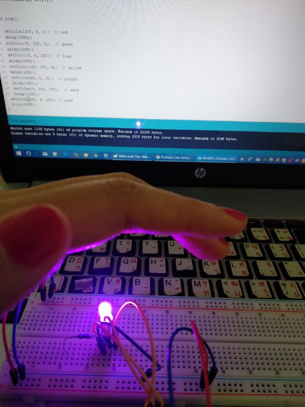

Here I document my Arduino class.
The original tool list on instructables.com is more detailed. I do not have exactly the same equipments.
Most of them are already in the Super Starter Kit UNO R3 Project.
Before starting, let's connect the Arduino board to the computer.
Connecting Arduino board to my computer while Arduino IDE is being downloaded.
The green LED is on and the orange LED started to blink as expected
The first part of the lesson is about controling LEDs with code - output.
>We start by connecting breadboard to the Arduino board. Understanding how sockets on the breadboard are
connected may be helpful.
Note 1: The rails between red and blue lines on the breadboard are connected vertically. Other rails, indicated by
numbers and alphabets, are connected horizontally.
The red wire is plugged in the 5V pin on the Arduino board while the other end is plugged into the red rail on
the breadboard. This is the power bus.
We also have to connect the ground.
I use the blue wire to connect from pin named GND on the
Arduino board to the blue rail on the breadboard.
Next, I connect a yellow wire to pin 13 on the Arduino board, the other end is plugged into the horizontal row
on the breadboard. Connect another blue wire from the groud (blue) rail on the breadboard to a horizontal row.
Now, plug one leg of a 1k resistor next to the blue wire on the honrizontal row and the other leg next to the
yellow wire. Grab a LED and connect the longer leg to the yellow wire. The positive charge comes from the
Arduino pin (here pin 13). The shorter leg should be connected to the resistor.
Note 2:LED has two legs. The longer lead is positive and the shorter leg is negative. Easy to remember!
To make the LED blink, we need the code. I use the program already written for this lesson from Arduino software menu.

Here is the code:
// Pin 13 has an LED connected on most Arduino boards.
// give it a name:
int led = 13;
// the setup routine runs once when you press reset:
void setup() {
// initialize the digital pin as an output.
pinMode(led, OUTPUT);
}
// the loop routine runs over and over again forever:
void loop() {
digitalWrite(led, HIGH); // turn the LED on (HIGH is the voltage level)
delay(1000); // wait for a second
digitalWrite(led, LOW); // turn the LED off by making the voltage LOW
delay(1000); // wait for a second
}
Now that everything is ready, I connect the USB cable to the computer and the LED is now blinking.
Note 3:Disconnect the USB cable from the computer when working on the connection/wiring.
In the code, the LED is programmed to be turned on and off with one second delay (delay(1000)). I
change this number to 5000. The result is a longer period between on and off of the LED (5 seconds).
Four more LEDs are added to the breadboard. The setup is similar to the previous task but the yellow wires are
moved from pin 13 to pins 3-7. One leg of each resistor is connected to the shorter leg of the LED, and
the other leg is plugged into the socket connected to the ground rail.

Code for task 2: again, the code is from Arduino software menu.
/*
For Loop Iteration
Demonstrates the use of a for() loop.
Lights multiple LEDs in sequence, then in reverse.
The circuit:
* LEDs from pins 3 through 7 to ground
created 2006
by David A. Mellis
modified 30 Aug 2011
by Tom Igoe
This example code is in the public domain.
http://www.arduino.cc/en/Tutorial/ForLoop
*/
int timer = 200; // The higher the number, the slower the timing.
void setup() {
// use a for loop to initialize each pin as an output:
for (int thisPin = 3; thisPin < 8; thisPin++) {
pinMode(thisPin, OUTPUT);
}
}
void loop() {
// loop from the lowest pin to the highest:
for (int thisPin = 3; thisPin < 8; thisPin++) {
// turn the pin on:
digitalWrite(thisPin, HIGH);
delay(timer);
// turn the pin off:
digitalWrite(thisPin, LOW);
}
// loop from the highest pin to the lowest:
for (int thisPi n = 7; thisPin >= 3; thisPin--) {
// turn the pin on:
digitalWrite(thisPin, HIGH);
delay(timer);
// turn the pin off:
digitalWrite(thisPin, LOW);
}
}
The code is supposed to turn the LEDs on one by one, starting from the light connected to pin 3 to pin 7
and then going backward from pin 7 to pin 3.
void setup() function enables the pins that will be used. This piece of code is run only once. Once
this piece of code is run, it enters void loop() function which will run infinitely. Here, for loop is
used to go from pin 3 to pin 7. The pin state is changed to HIGH. In other words, the LED is turned on for
200 milliseconds before the state is changed to LOW for another 200 milliseconds and loop to the next pin.
The second part of the code inside void loop() function works in a similar way but looping from pin 7 to
pin 3.
I changed the value of variable timer to less than 200. Hence, in the video, the iteration of the LEDs
is faster.
This task only needs one LED; hence, other four LEDs and wires are removed and only one remains. The yellow wire
is now plugged to pin 9 as shown in the picture below.
Understanding the code: The code from Arduino software menu shows how the LED fades in and out.
/*
Fade
This example shows how to fade an LED on pin 9
using the analogWrite() function.
This example code is in the public domain.
*/
int led = 9; // the pin that the LED is attached to
int brightness = 0; // how bright the LED is
int fadeAmount = 5; // how many points to fade the LED by
// the setup routine runs once when you press reset:
void setup() {
// declare pin 9 to be an output:
pinMode(led, OUTPUT);
}
// the loop routine runs over and over again forever:
void loop() {
// set the brightness of pin 9:
analogWrite(led, brightness);
// change the brightness for next time through the loop:
brightness = brightness + fadeAmount;
// reverse the direction of the fading at the ends of the fade:
if (brightness == 0 || brightness == 255) {
fadeAmount = -fadeAmount ;
}
// wait for 30 milliseconds to see the dimming effect
delay(30);
}
The analogWrite() function is used in this program. The LED is connected to pin 9 which is declared to
be an output. Void setup() initialises pin 9. This code only runs once.
In void loop() which will run infinitely, the brightness of the LED plugged to pin 9 is set to 0. LED
fades due to the next line of code. The value of brightness is incremented by 5 points until it reaches
255. As a result, the brightness keeps getting brighter. It skips the if statement as brightness
is neither 0 nor 255 (yet).
When the brightness reaches 255, which makes the if statement true, fadeAmount is, then changed from
5 to -5. The loop starts again, this time brightness is equal to 255 + (-5) or 255-5 (the new value of
fadeAmount).
The brightness will, then, continue to decrease 5 until it reaches 0 again. Once it reaches 0 and satisfies
the if statement, fadeAmount, whcih is currently -5 is now set to be equal to -(-5) or positive 5. And the
loop continues.
Here,the video shows the LED fades.
This task requires three clear-lens LEDs. However, there is only one clear-lens LEDs in my kit, I only used
one LED in stead of three. My LED; however, has four legs and not two. The longest lead is the common negative
connection which will be connected to ground. The other three leads are positive connection for each of the
LED. Three positive leads of the LED should be connected to the Arduino pin using resistors (each resistor
for each positive lead). I; however, only used one resistor.
So for this connection, I simply just switched the red LED to the clear one. The connection looks like this.
It is a little different from the setup on instructables.com but it still worked!
The code for this task is:
/*
Adafruit Arduino - Lesson 3. RGB LED https://learn.adafruit.com/adafruit-arduino-lesson-3-rgb-leds/
*/
int redPin = 9;
int greenPin = 10;
int bluePin = 11;
void setup()
{
pinMode(redPin, OUTPUT);
pinMode(greenPin, OUTPUT);
pinMode(bluePin, OUTPUT);
}
void loop()
{
setColor(255, 0, 0); // red
delay(1000);
setColor(0, 255, 0); // green
delay(1000);
setColor(0, 0, 255); // blue
delay(1000);
setColor(255, 255, 0); // yellow
delay(1000);
setColor(80, 0, 80); // purple
delay(1000);
setColor(0, 255, 255); // aqua
delay(1000);
}
void setColor(int red, int green, int blue)
{
analogWrite(redPin, red);
analogWrite(greenPin, green);
analogWrite(bluePin, blue);
}
After trying this given code, I modified it for a small experiment. The connection remains the same,
but the code is changed. I added a new line of code to the loop while commented others out. the
code added to the loop is:
setColor(100, 0, 100); // pink
delay(1000);
The result is, we get the pink light like this:

Inputs will be added to the connection for the rest of the tasks - switch (digital input) and potentiometre
(analog input).
The connection from this task is similar to the first circuit - with the yellow wire from pin 13 connected to
the positive lead of the LED and the negative lead connected to the resistor.
Additional connection here is the pushbutton. Plug the pushbutton in the middle of the breadboard. Then,
connect one leg of another resistor to one of the lead of the pushbutton with the other leg plugged into a
the breadboard's red 5v power rail. Connect a yellow wire next to the resistor in the horizontal row and the
other end to pin 2.
In sum, the LED is connected to pin 13, and the pushbutton is connected to pin 2.
The code for this task is as follows:
/*
Button
Turns on and off a light emitting diode(LED) connected to digital
pin 13, when pressing a pushbutton attached to pin 2.
The circuit:
* LED attached from pin 13 to ground
* pushbutton attached to pin 2 from +5V
* 10K resistor attached to pin 2 from ground
* Note: on most Arduinos there is already an LED on the board
attached to pin 13.
created 2005
by DojoDave
modified 30 Aug 2011
by Tom Igoe
This example code is in the public domain.
http://www.arduino.cc/en/Tutorial/Button
*/
// constants won't change. They're used here to
// set pin numbers:
const int buttonPin = 2; // the number of the pushbutton pin
const int ledPin = 13; // the number of the LED pin
// variables will change:
int buttonState = 0; // variable for reading the pushbutton status
void setup() {
// initialize the LED pin as an output:
pinMode(ledPin, OUTPUT);
// initialize the pushbutton pin as an input:
pinMode(buttonPin, INPUT);
}
void loop() {
// read the state of the pushbutton value:
buttonState = digitalRead(buttonPin);
// check if the pushbutton is pressed.
// if it is, the buttonState is HIGH:
if (buttonState == HIGH) {
// turn LED on:
digitalWrite(ledPin, HIGH);
}
else {
// turn LED off:
digitalWrite(ledPin, LOW);
}
}
***ADD VIDEO***
In the video, the light should be on when the button is pressed. However, it does the opposite - light is off
when the button is pressed. This is because of the given code.
In the void setup(), ledPin and buttonPin are initialised. The former is initialised as output and the latter
is initialised as input.
The digitalRead() function checks the state of pin 2 and store that state in the var buttonState.
If statement checks if the buttonState is HIGH. If the condition is satisfied, digitalWrite() function
turns the LED on. Otherwise, the LED is off.
To make the circuit works the way we expect (LED is on when button is pressed), the code in the void loop()can be
changed to the following.
void loop() {
// read the state of the pushbutton value:
buttonState = digitalRead(buttonPin); // check if the pushbutton is pressed.
// if it is, the buttonState is LOW:
if (buttonState == LOW) {
// turn LED on:
digitalWrite(ledPin, HIGH);
}
else {
// turn LED off:
digitalWrite(ledPin, LOW);
}
}
This task does not require an LED. So the connection of the LED can be removed. The button should remain the same.
/*
DigitalReadSerial
Reads a digital input on pin 2, prints the result to the serial monitor
This example code is in the public domain.
*/
// digital pin 2 has a pushbutton attached to it. Give it a name:
int pushButton = 2;
// the setup routine runs once when you press reset:
void setup() {
// initialize serial communication at 9600 bits per second:
Serial.begin(9600);
// make the pushbutton's pin an input:
pinMode(pushButton, INPUT);
}
// the loop routine runs over and over again forever:
void loop() {
// read the input pin:
int buttonState = digitalRead(pushButton);
// print out the state of the button:
Serial.println(buttonState);
delay(1); // delay in between reads for stability
}
The serial monitor helps check different parts of the code by communicating back to the computer through the USB
cable (serial). In this case, the serial monitor checks the state of the button and whether or not the connection
is working. The pushButton connected to pin 2 is initialised as input.
In the void loop(), digitalRead() function checks the state of the pushButton and stores the state in variable
buttonState. Then, Serial.println() funciton prints the state of the buttonState on the screen with 1 milliseconds
delay.
If the button is pressed but Serial.println() prints 0 as the state of the button, this could mean the connection
has to be checked or reconnected.
This task uses Arduino's analog input. On the left side of Arduino board, there are analog pins to which the potentiometre
will be connected. The analog pins are connected to ADC (Arduino's analog-to-digital converter).
Connect a wire from Arduino analog pin A0 to the breadboard which is also connected to the centre pin of the
potentiometre. Connect a LED control wire to pin 13 on Arduino with the other side connected to the (longer leg
of the) LED. Connect a resistor to the shorter leg of the LED.
/*
Analog input, analog output, serial output
Reads an analog input pin, maps the result to a range from 0 to 255
and uses the result to set the pulsewidth modulation (PWM) of an output pin.
Also prints the results to the serial monitor.
The circuit:
* potentiometer connected to analog pin 0.
Center pin of the potentiometer goes to the analog pin.
side pins of the potentiometer go to +5V and ground
* LED connected from digital pin 9 to ground
created 29 Dec. 2008
modified 9 Apr 2012
by Tom Igoe
This example code is in the public domain.
*/
// These constants won't change. They're used to give names
// to the pins used:
const int analogInPin = A0; // Analog input pin that the potentiometer is attached to
const int analogOutPin = 9; // Analog output pin that the LED is attached to
int sensorValue = 0; // value read from the pot
int outputValue = 0; // value output to the PWM (analog out)
void setup() {
// initialize serial communications at 9600 bps:
Serial.begin(9600);
}
void loop() {
// read the analog in value:
sensorValue = analogRead(analogInPin);
// map it to the range of the analog out:
outputValue = map(sensorValue, 0, 1023, 0, 255);
// change the analog out value:
analogWrite(analogOutPin, outputValue);
// print the results to the serial monitor:
Serial.print("sensor = " );
Serial.print(sensorValue);
Serial.print("\t output = ");
Serial.println(outputValue);
// wait 2 milliseconds before the next loop
// for the analog-to-digital converter to settle
// after the last reading:
delay(2);
}
Plug the USB to the computer and upload the sketch to the Arduino board. The values of analog input are printed
alongside the brightness value applied to the LED when the potentiometre is turned.
In the main loop, analogRead() function reads the position of the potentiometre and store it in the sensorValue.
The map() function then maps the analogRead value (sensorValue) between 0 - 1023 to a value between 0 - 255.
This is because the next function, analogWrite, according to Arduino reference, takes two arguments which are
the pin and the outputValue. The second argument is between 0 and 255.
Results are, then, printed to the serial monitor.